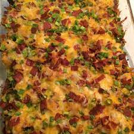

Combining Buffalo Chicken with Loaded Baked Potatoes
This dish is perfect for anyone who is looking for a quick way to feed a great dish to many people. From prep time to the table takes only 1 hour and 20 minutes, and with the ability to feed 10 people, this dish is a must have for gameday. What makes this dish so unique is that it takes commonly paired food items and combines them into one dish. This casserole is great, as it perfectly maintains the taste of both the buffalo chicken and the loaded potatos. Not only this, but it also finds a way to use these two popular dishes to complement each other.
Ingredients
- cooking spray
- 6 tablespoons hot pepper sauce
- 1/3 cup olive oil
- 2 tablespoons garlic powder
- 1 tablespoon freshly ground black pepper
- 1 tablespoon paprika
- 1.5 teaspoons salt
- 8 potatoes, cut into 1/2-inch cubes
- 2 pounds skinless, boneless chichen breast halves, cut into 1/2 inch cubes
- 2 cups shredded Mexican cheese blend
- 1 cup crumbled cooked bacon
- 1 cup diced green onions
Steps
- Preheat oven to 500 degrees F (260 degrees C). Spray a 9x13-inch baking dish with cooking spray.
- Heat hot pepper sauce, olive oil, garlic powder, black pepper, paprika, and salt in a large skillet over low heat, stirring until thoroughly combined. Turn off heat. Toss potatoes in batches with the hot pepper sauce mixture to coat and use a slotted spoon to transfer potatoes to the prepared baking dish. Leave remaining sauce in skillet. Mix chicken into remaining sauce and allow to marinate while potatoes roast.
- Bake potatoes until tender inside and crisp and brown outside, 45 to 50 minutes, stirring every 10 to 15 minutes.
- Reduce oven heat to 400 degrees F (205 degrees C).
- Spread chicken cubes over roasted potatoes. Sprinkle Mexican cheese blend, cooked bacon, and green onions over chicken. Return to oven and bake until chicken is cooked through and the cheese topping is bubbling, about 15 minutes.
- Bake in oven until chicken is cooked through and the cheese topping is bubbling, about 15 minutes.